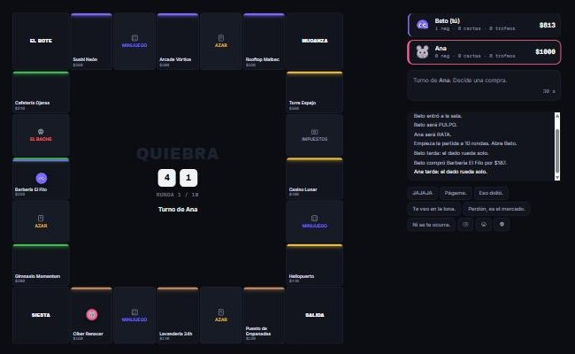
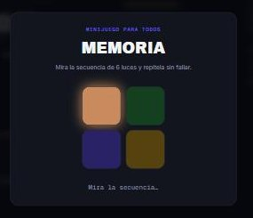

Cartilla — Casos de estudio de IRIS Studio
Un juego web multijugador para 4 personas, diseñado y construido de cero en una noche: tablero, minijuegos, sabotaje y un servidor autoritativo que cabe en el plan gratuito de Cloudflare.
[01] — La idea
El encargo: un juego para cuatro amigos en el navegador, con la referencia de Monopoly pero yendo más allá, en la línea de los party games caóticos que se juegan en grupo. La respuesta fue QUIEBRA: se conserva lo que funciona del clásico (comprar, cobrar rentas, arruinar al prójimo) y se corta lo que lo hace eterno.
Tres decisiones lo separan de su referencia: los minijuegos simultáneos — cuando alguien cae en la casilla, juegan los cuatro a la vez y nadie mira el teléfono —, las cartas de sabotaje dirigidas — dados trucados, okupas, expropiaciones — y el final por rondas: a las 10 rondas se corta y gana el mayor patrimonio, no el último superviviente de una agonía de tres horas.
[02] — Cómo se juega
[03] — Personajes
[04] — El resultado


[05] — Cómo está hecho